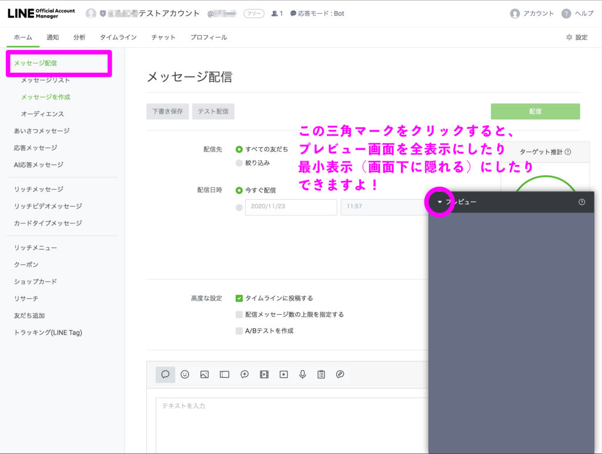
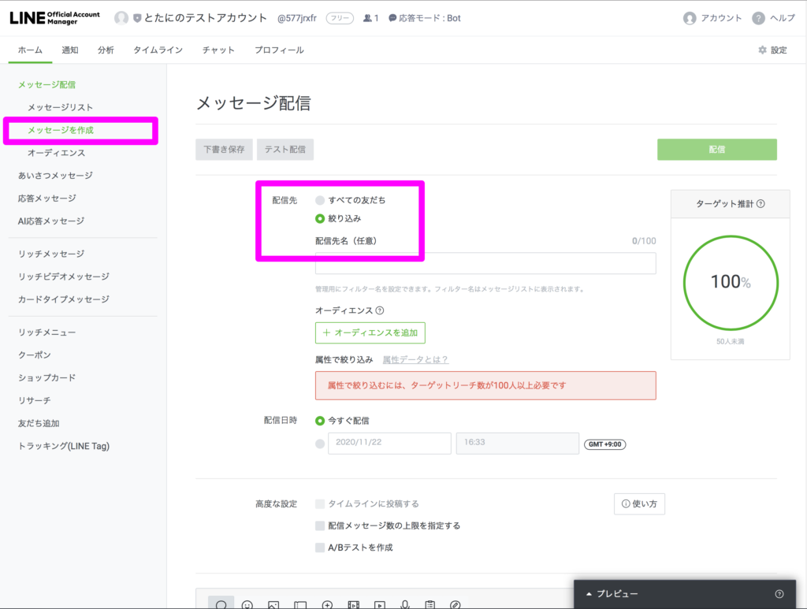
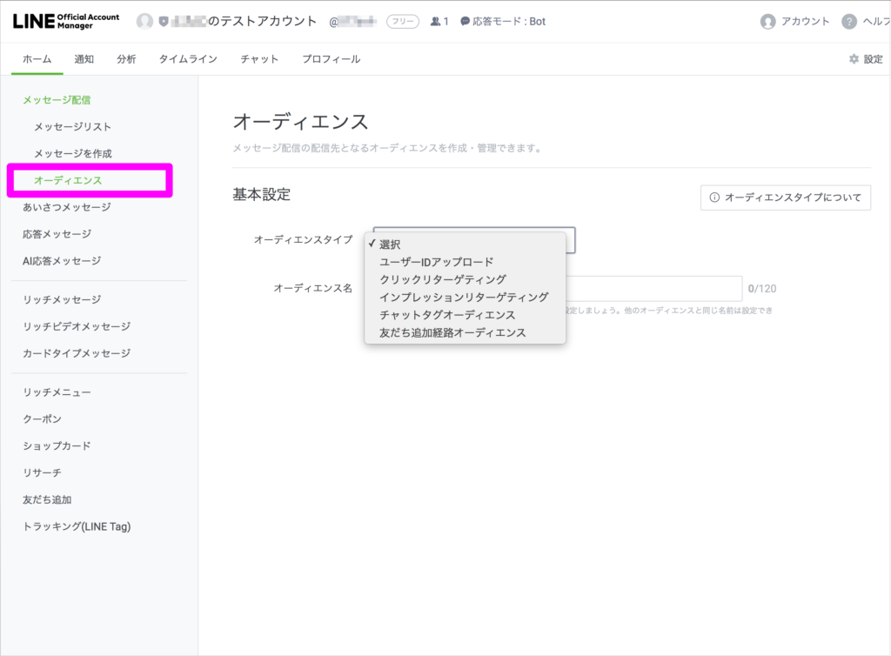
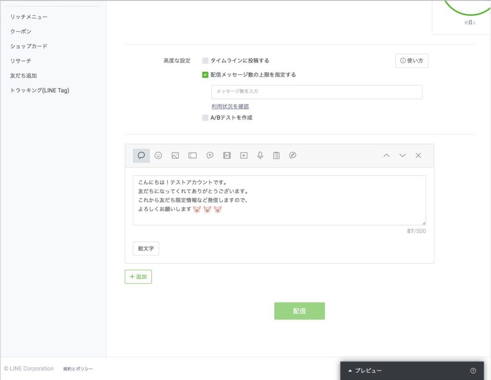
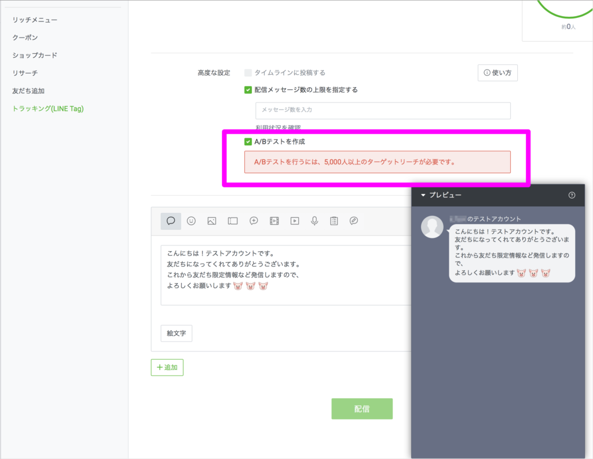
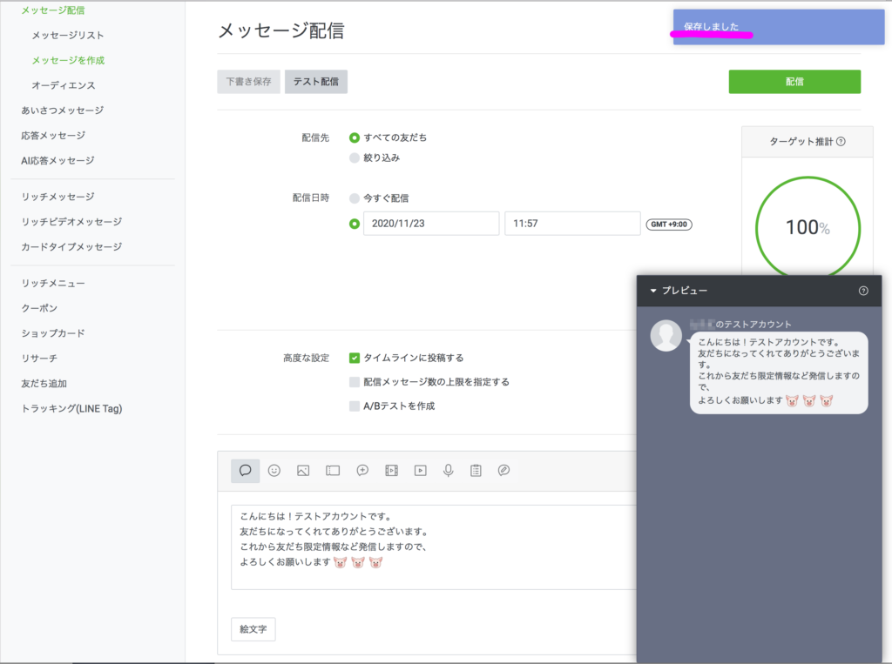
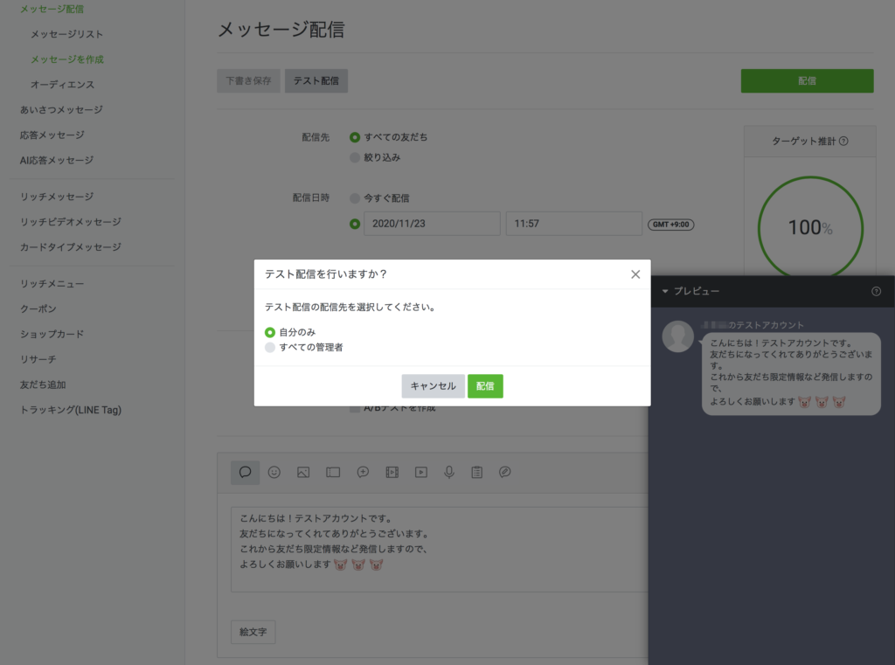

#014 メッセージ配信する方法
こんにちは！matsumotoです。 最近、きちんと順を追ってLINE公式アカウントの開設〜運営までをブログで解説しています。このブログを読んでいただければ、LINE公式アカウントのすべてが分かりますので、ぜひ読んでくださいね！ブログの更新は、基本的に毎週月曜朝７時頃です（祝日などが重なると、祝日明けの平日朝７時頃となります）
今日は初心者さん向けに、「はじめてのメッセージ配信」のやり方を説明しますね。
もし「ブログのここがちょっと分からない」とか「うちの店でも実装できるんだろうか？」など、疑問や質問があれば、遠慮なくmatsumotoまで直接ご連絡くださいね！ このブログに表示されているバナー（友達追加特典！）や、僕のプロフィール下の友達追加ボタンから友だち追加してもらえば、特典として初回60分無料相談や、公式アカウントを開設するときの作業チェックリストのプレゼントなど、LINE公式アカウントユーザーのためのお役立ち情報、サポート・アドバイスなど、無料で提供しています。（より深い内容や、ユーザー様個々に対する運営提案などについては、コンサルタント料が発生します）
はじめてのメッセージ配信

基本的にパソコンからの配信作業をおすすめしています。まずはおなじみ、LINE Account Managerのページから、自分のアカウントにログインしましょう。画面左のメニューから「メッセージ配信」を選択し、右上の「作成」ボタンをクリックすると、右下にスマホのプレビュー画面が表示されます。作業を進めていくと、このプレビュー画面で自分の公式アカウントから発信した情報がどのように友達のスマホ（トーク）上で表示されるているのか、分かるようになっています。
配信先を選ぶ

まだLINE公式アカウントを始めたばかりで友達が少ない…、という方がほとんどでしょう。ここは「すべての友達」ボタン一択でよいと思います。

もし「友だちはもう十分いるので、的を絞って効果的なメッセージ配信をしたい！」という場合は、「絞り込み」を選択してどのような属性の友達に配信するか（セグメント配信）を設定します。具体的には、「オーディエンス」を選ぶと、以前自分が配信したメッセージをクリックしてくれた人や、自分がタグ付けした友達だけにメッセージ配信ができます（※タグ付けのやり方については、またあらためて別のブログ記事で説明します）。自分に興味を持ってくれている人だけに送るので、友だちみんなからのブロック率が下がるというメリットがあります。

すべての友達に配信する
配信先で「すべての友だち」を選択し、配信日時を設定します。配信設定をする日以降の、一番よいタイミングを考えて設定しましょう（週のはじめに配信する、または平日の週末に配信する、お昼休みや夜７時ごろに配信するなど、友だちがより自分の配信メッセージを見てくれやすそうな日時を浮かべて決めます）。
高度な設定をする
初期設定だと、①「タイムラインに投稿する」というボックスにチェックが入っています。このまま下のボックスに配信メッセージ（テキスト）を入力して配信すると、ご自分の公式アカウントのタイムラインにも同じメッセージが投稿される仕組みです。ただ、無料会員（フリープラン）の人のタイムラインには同時に２つ以上の配信メッセージを作成・配信したいできない仕様になっていますので、どのようにメッセージ配信をしたいかという設計を考えた上で、フリープラン（無料）のままアカウントを運営するのか、有料プランに移行するか検討してください。

また、②「配信メッセージ数の上限を指定する」というボタンを選び、上限数を下の欄に入力すると、あなたの友だちの中から指定された人数の人がランダムに選択され、配信されるという機能がついています…。ランダムに選ばれることで効果的なメッセージ配信ができるのか？という点はさておき、ここで注意していただきたいのが、「配信メッセージ数の上限」についてです。
まだライン公式アカウントを作ったばかりの人であれば、無料でアカウントを使っていると思いますが、フリープラン（無料）のアカウントで月に配信できるメッセージ数は1,000通までです。1,000通を超えると、同月中に追加で別のメッセージを配信するということはできません。これも、友だちの数や、どのような頻度でメッセージ配信したいかをよく考えた上で、料金プランを確認してみてくださいね。ちなみに、有料会員になり支払いが発生した場合、LINE Payや請求書払い、クレジット決済が可能です。

③「A/Bテストを作成」を選択すると、あなたが作成した二種類のメッセージをアップして、どちらが友だちにとって効果的かどうかをLINE BUSINESSが判定してくれます。これは友達が5,000人以上いる人しか使えない機能なので、大多数の人には関係ないかもしれません。
いちおう説明しておくと、右下のプレビュー画面を見ながら絵文字や画像など織り交ぜてメッセージを作成することができます。プレビュー画面を見ながら設定するメリットは、友達のスマホで自分のメッセーがどのように見えるかを確認しながら作成できる点です。あまりにだらだらと長いメッセージは、たぶん見る側にとって読むのが面倒なので、プレビュー画面をスクロールしなくても読める程度のボリュームに収めることが望ましいです。収まらない場合は、左下の「＋追加」ボタンから新しい吹き出し（メッセージ）を追加して、二回に分けて配信することもできます。
テスト配信をする

基本的なメッセージ配信設定はこれで完了です。念のため、はじめてメッセージ配信する前に一度、ご自分でテスト配信してみることをおすすめします。入力した内容を「下書き保存」すると、「テスト配信」ボタンを選択できるようになるので、自分のスマホに配信してみましょう。配信先については、「自分のみ」を選択される方が大半かと思いますが、ビジネスパートナーや誰かにアドバイスをお願いしたい場合（アカウントを共有している前提）は、「すべてのログインユーザー」を選択します。「すべてのログインユーザー」＝あなたの「友だち全員」ではないので、誤解なきように。実際にテスト配信してみて、あなたの友だちがメッセージを見てどのように感じるか、魅力を感じてもらえるかなどを確認してから、本配信を行ってください。

本日はこれまでです！ おつかれさまでした。また来週！
まずはLINE公式アカウントを開設しましょう！
●LINE公式アカウントの開設方法はこちら
●LINE公式アカウントをオススメする理由はこちら
●LINE公式アカウントでできることはこちら
●Lステップでできることはこちら